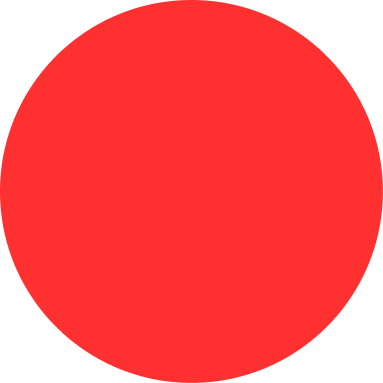
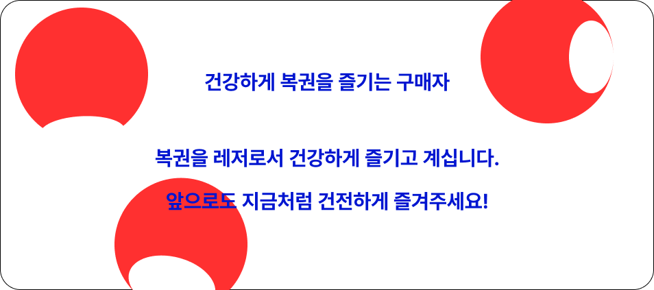

복권 과몰입 자가진단 테스트
* 해당하는 항목을 선택하세요. *
복권 당첨확률 분석하느라 업무를 게을리한 적 있다.
복권 당첨으로 일확천금의 충동을 느낀다.
‘당첨되면 어디에 쓸까’하는 상상에 잠기곤 한다.
복권으로 잃은 돈은 복권 당첨금으로 되찾아야 한다.
월수입의 1% 이상을 복권 구매에 투자하고 있다.
스스로 정한 금액 이상 구매하는 경우가 종종 있다.
남에게 돈을 빌려서라도 복권을 구매한다.
언제 어디서나 복권 판매점을 보면 바로 구매한다.
복권 구매로 부부싸움이나 가족간 불화가 있다.

결과 보기
돌아가기